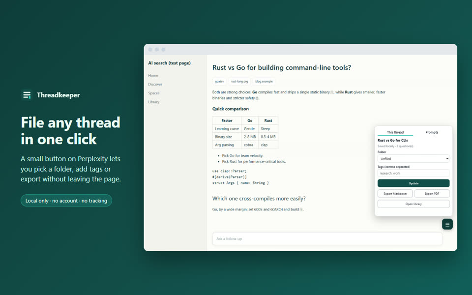

How to organize Perplexity threads into folders
Perplexity's library grows into one long list. Spaces help, but they are built for projects, not filing. Here is how to use both.
Perplexity Spaces
A Space groups threads and files for one project or topic, and can carry its own instructions. Spaces are separate containers: a thread lives in one Space, and you can't tag it or file it in two places.
Folders and tags with Threadkeeper
- Install Threadkeeper (free).
- Open a thread on Perplexity and click the Threadkeeper button at the bottom right.
- Pick a folder or type a tag. Use tags for anything that fits more than one folder ("pricing", "to-read", "client-X").
- To sort many threads, open the Threadkeeper library, tick them and move or tag them in one go.

A simple folder setup that works
- One folder per active project, plus Reference for answers you return to.
- Tags for type: how-to, comparison, sources, to-verify.
- Once a week, file anything still in the unfiled view.
Add Threadkeeper to Chrome, free
FAQ
Does Perplexity have folders?
Perplexity has Spaces, which group threads by project. Threadkeeper adds folders and tags on top, stored locally in your browser.
Do Threadkeeper folders change anything on Perplexity?
No. Folders and tags live only in your browser. Your Perplexity account is not changed.